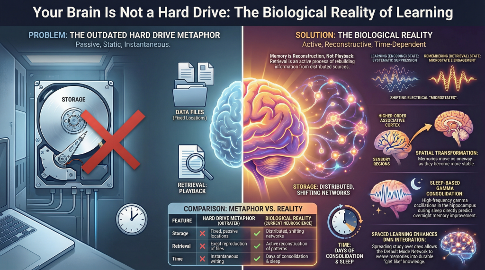

The Metaphor We Can’t Seem to Quit
The brain works like a computer hard drive
You encounter something new — a name, a concept, a mathematical proof — and the brain writes it to memory,much like saving a file to disk. Later, when you need it, you retrieve the file. If you studied well, the file is intact. If you didn’t, it’s corrupted or missing. Forget the information long enough and it gets deleted, overwritten by something newer.
The brain is nothing like this.
The persistence of the storage metaphor in everyday thinking about education — and even in some corners of cognitive science — is not simply a matter of imprecision. It actively misleads the way we design classrooms,schedule study sessions, and evaluate what it means to “know” something. The metaphor suggests that memory is a matter of fidelity: the better you encode, the more faithfully you retrieve. But what contemporary neuroscience has found is considerably stranger and more interesting than that. Memory is reconstructive, not reproductive. The brain enters entirely different electrical and metabolic states depending on whether it is forming a memory or recalling one. Durable learning requires time, sleep, and the spontaneous replay of experience across distributed cortical networks. And the physical architecture of the brain — down to the microscopic scale of individual synaptic junctions — is literally reshaped by what you learn.
Understanding these facts is not merely an academic exercise. It changes what learning should look like.
Section 1: Memory Is Reconstructive, Not Stored
The Feeling of Replay Is an Illusion
When you remember something, it feels like playback. You seem to re-experience the original event, reconstructing the scene with something like sensory fidelity. This phenomenological impression is compelling — and misleading.
Research by Favila, Lee, and Kuhl, published in Trends in Neurosciences, argues that the dominant framework for understanding memory — a framework built around the concept of “reactivation” — captures only part of what the brain actually does, and inadvertently obscures something important. Reactivation, as the term is used in neuroscience, refers to the finding that patterns of neural activity expressed during an initial perceptual experience are re-expressed when that experience is later remembered. This is a genuine and well-replicated phenomenon: the brain regions that were active when you saw a face, or heard a melody, or read a word are partially re-activated when you recall those things later.
The problem is that “reactivation” emphasizes sameness — the similarity between the neural patterns of original experience and later recall. It implies a kind of playback. But Favila and colleagues point to growing evidence that this framing systematically underestimates what memory retrieval actually involves. Some brain regions,they note, actually contain more information about an experience during retrieval than they did during the original perception of it. If memory were simply a weaker or degraded replay of perception, this should not be possible. Yet it has been empirically demonstrated: the neural fingerprint of a memory can, in certain cortical regions, be stronger and richer during recall than it was when the event was first registered.
Spatial Transformation: Memory Moves
The more precise claim that Favila and colleagues advance is that memory representations are best understood as spatially transformed versions of perceptual representations. This is a technical but important idea. When you perceive something, certain brain regions process and encode that information — primarily sensory cortices relevant to the modality of the experience. When you remember that same thing, the content of the memory is expressed not only in those same regions, but also in other areas, particularly frontoparietal regions that were less engaged during initial perception. The information has moved, in a systematic and predictable way, to different neural neighborhoods.
This spatial transformation is not random degradation. It reflects an active reorganization of content across the cortex — a shift from sensory-anchored representation to a more abstract, integrated one. What this means biologically is that the act of retrieval is not reading a stored file from a fixed location. It is the reconstruction of information from distributed sources, expressed in a spatial configuration that differs, sometimes substantially, from the configuration in which it was originally encoded.
This has a counterintuitive implication: the brain you use to remember is, in a measurable neural sense, a different brain than the one that learned. The patterns of activation are different. The regions carrying the informational load are different. The distributed network that “holds” the memory has been reorganized. There is no single location in the brain where “the memory” lives, waiting to be read back. What we call recall is, more accurately, a reconstruction that is shaped by everything the brain has experienced in the interim.
Section 2: The Brain Changes Its Body When It Learns
Synaptic Boutons and the Architecture of Learning
If memory is reconstructive at the systems level — distributed across regions, spatially transformed, reorganized over time — what is happening at the microscopic level when learning occurs? The answer involves physical changes to the actual structure of the brain.
The key unit of interest here is the synaptic bouton: a small, bulb-shaped swelling at the tip or along the length of a neuron’s axon, which forms one side of a synapse. Each bouton is packed with membrane-bound sacs called synaptic vesicles that contain neurotransmitter molecules. When an electrical signal arrives, vesicles fuse with the outer membrane of the bouton and release their contents into the synaptic cleft — the microscopic gap between two neurons. This is how neurons talk to one another, and how information propagates through the brain.
Research by Dufour, Rollenhagen, Sätzler, and Lübke, published in Cerebral Cortex, provides an unusually detailed quantitative account of how synaptic boutons develop in the neocortex during early postnatal life. Using high-resolution electron microscopy and three-dimensional reconstruction of individual synaptic structures in rat somatosensory cortex, the team traced the structural changes in synapses from shortly after birth through the first month of postnatal development — a period of intense corticogenesis and synaptogenesis.
Their findings reveal that synaptogenesis is far from a simple process of building bigger or more numerous contact points. In early postnatal development, synaptic boutons in cortical Layer 4 are actually relatively large, with synaptic vesicles distributed loosely throughout the bouton. Over the first two weeks, something telling happens: the vesicles reorganize into a densely packed formation close to the presynaptic density — the active zone where vesicle fusion and neurotransmitter release occur. This reorganization accompanies the formation of functionally distinct vesicle pools: a readily releasable pool (immediately available for release upon stimulation), and later, a recycling pool and a reserve pool. At the same time, the overall volume of synaptic boutons actually decreases, while the size of active zones — the transmitter release sites themselves — remains comparatively stable.
What this means functionally is that the synapse becomes more efficient, more precisely organized, and more capable of sustained, reliable communication as the brain matures and experiences accumulate. The readily releasable pool is a measure of the synapse’s capacity for rapid, repeated signaling; its formation is essentially a structural commitment to that communicative capacity.
Learning Is Literally Structural Change
This matters for how we think about learning because the physical architecture of cortical synapses is not fixed. The development Dufour and colleagues document is driven by a combination of genetic programming and experience-dependent activity. The whisker-barrel system they studied — in which individual whiskers on a rat’s face are mapped to discrete cortical columns, called “barrels” — is a classic model for studying experience-dependent plasticity. When whiskers are active, the relevant cortical columns are activated, and synaptic connections in those columns are sculpted accordingly. Use a pathway repeatedly and coherently, and its synaptic structure responds.
Learning, then, is not metaphorically writing to a disk. It is, in a material and literal sense, reshaping the physical substrate of the brain: reorganizing vesicle pools, refining active zones, adjusting the geometry of synaptic contacts. The brain is not a passive storage medium. It is an adaptive living network whose connectivity is continuously modified by what it encounters and what it does.
Section 3: Spaced Learning, Consolidation, and the Default Mode Network
Why Time Matters: The Spacing Effect Has a Neural Basis
Most students, if pressed, know that cramming the night before an exam tends to produce knowledge that is available in the morning and gone within the week. The spacing effect — the well-documented finding that learning distributed across multiple sessions separated by time substantially outperforms learning compressed into a single session — has been known to educational psychologists for over a century. What has been less clear is why it works, at the neural level.
A 2025 study by Yang, Huang, Yang, Fan, and Yin, published in Communications Biology (a Nature Portfolio journal), provides some of the most direct neuroimaging evidence to date on this question, and the answer involves a brain network whose role in memory consolidation is only recently coming into clear focus.
The researchers recruited 69 participants who were randomly assigned to one of two learning conditions: a three-day spaced learning group, who encountered the same material distributed across three days, and a one-day massed learning group, who completed the same total amount of exposure in a single day. Both groups studied a set of 60 picture-word pairs, and their memory was tested immediately after learning, again at one week, and again at one month. Brain imaging data (fMRI) were collected at each test session.
The behavioral results replicated what the spacing effect literature predicts: both groups performed similarly on the immediate test, but the spaced learning group showed significantly better retention at one week and one month. The immediate equivalence is important because it rules out the explanation that spaced learners simply paid more attention during encoding. The divergence over time points to something happening in between sessions — during consolidation.
The Default Mode Network and Its Three Subsystems
To understand what Yang and colleagues found in the brain, it is necessary to understand a brain network that has often been described in confusingly negative terms. The Default Mode Network (DMN) is a set of brain regions — spanning medial and lateral temporal cortex, medial and lateral parietal cortex, and medial prefrontal cortex — that tends to be relatively deactivated during externally directed attention tasks and relatively activated during internally oriented cognition: mind-wandering, autobiographical memory, imagining future events, and mentalizing about other people.
The name “default mode” is historical: the network was initially identified as the baseline state of the brain when it is not engaged in a specific task, the neural resting state from which it departs during focused external processing. But this framing was always somewhat misleading. The DMN is not idle when it is most active. It is doing something important, and that something appears to be closely related to how memory is organized and integrated over time.
Yang and colleagues draw on an emerging model that divides the DMN into three anatomically and functionally distinct subsystems. The DMNmt (medial-temporal subsystem) is spatially and functionally closest to the hippocampus and is associated with the encoding and retrieval of episodic memory — the kind of detailed, contextual, experiential memory that records what happened, where, and when. The DMNcore (core subsystem) is involved in self-referential and long-term memory processing, and appears to function as a hub that mediates information transfer between the other two subsystems. The DMNdm (dorsal-medial subsystem) is most closely linked to the integration and storage of memory over longer timescales — to the formation of gist-like, schematic representations that integrate new information with existing knowledge.
The spatial ordering of these subsystems reflects what might be a functional gradient in memory consolidation: from the hippocampus and DMNmt, where episodic memories are initially encoded in rich, contextual detail, through the DMNcore, which mediates transfer, and out to the DMNdm, where memory representations are reorganized into more durable, integrated forms.
Representational Similarity Analysis and Neural Replay
To measure what was happening in these networks, Yang and colleagues used two complementary analytical tools. The first is representational similarity analysis (RSA), a technique for assessing how similar the patterns of neural activity evoked by different learned items are to one another within a given brain region. High similarity means the brain is representing different memories in overlapping, integrated neural patterns — a sign of memory integration and schematization, where individual traces are being woven together into a more general representation. Low similarity means each memory is represented distinctly, with less overlap.
The second tool is the measurement of neural replay: the tendency of learned material to be spontaneously re-expressed during rest or sleep, in the form of reactivated neural activity patterns resembling those observed during the original learning. Replay has been extensively studied in rodent models, where it was first identified as the reactivation of place-cell firing sequences during sleep following spatial exploration. In humans, it has been studied indirectly through fMRI, by looking for statistical evidence that patterns of neural activation during learning re-emerge during subsequent rest.
What Spaced Learning Does to the Brain
Yang and colleagues found that, compared to massed learners, the spaced learning group showed significantly higher representational similarity in the DMN subsystems during the immediate retrieval test — but notably, not in the hippocampus. This is a critical distinction: hippocampal similarity was elevated in both groups, but cortical integration — the signature of memory having been transferred and reorganized into the broader default mode network — was selectively enhanced in the spaced group.
More specifically, representational similarity in the DMNdm was the best predictor of memory durability defined by the one-month test. That is, learners whose brains showed more integrated, similar neural patterns in the dorsal-medial DMN after learning were more likely to retain the information a month later. The DMNdm, the subsystem most associated with long-term integration and gist-based storage, appeared to be the crucial locus of what spaced learning uniquely provides.
The neural replay findings were equally telling. Both spaced and massed learners showed replay of learned material in the hippocampus — hippocampal replay appears to be a general feature of consolidation regardless of how learning was distributed. But spaced learners additionally showed enhanced replay in the DMNdm. The brain was, in the gaps between spaced learning sessions, spontaneously reactivating and consolidating material in cortical networks in a way that massed learning did not permit.
What this suggests is that the superior durability of spaced learning is not simply a product of retrieval effort during encoding, or stronger initial learning signals. It is a product of what happens between learning episodes: time allows the brain to engage in the kind of spontaneous consolidation — hippocampal-cortical transfer, cortical integration, DMNdm replay — that gradually reorganizes memory traces into more stable and retrievable forms.
Section 4: How Remembering Differs from Learning — Electrically
The Brain Changes State Between Encoding and Retrieval
We have established that memory representations are spatially transformed between encoding and retrieval, and that the consolidation process gradually transfers and integrates memory traces across brain systems. But there is a more immediate, measurable way in which learning and remembering are distinct: the brain enters entirely different global electrical states depending on which process it is engaged in.
This is not a subtle difference detectable only with sophisticated multivariate analysis. It manifests as a wholesale shift in the large-scale configuration of brain network activity — visible in the scalp-recorded electrical signals of electroencephalography (EEG).
Research by Hong, Moore, Smith, and Long, published in the Journal of Cognitive Neuroscience, examined this question directly. Participants performed a mnemonic state task in which they were cued to bias themselves toward either an encoding state — actively forming new memories — or a retrieval state — actively attempting to remember previously presented material. The investigators used a technique called microstate analysis to track the brain’s electrical configuration across these different mnemonic demands.
What Is a Microstate?
EEG measures the summed electrical activity of large neuronal populations through electrodes placed on the scalp. Rather than analyzing individual electrodes, microstate analysis treats the whole-scalp topography — the global pattern of voltage distribution across all electrodes at a given moment — as a single, holistic state. At any given instant, this topography falls into one of a small number of recurring, quasi-stable configurations, called microstates, each of which persists for roughly 60 to 120 milliseconds before transitioning to another.
Think of microstates as momentary postures of the entire brain’s electrical field — brief, stable gestures that recur across time and across individuals. Four canonical microstates (labeled A through D) have been identified consistently across resting-state and task-based studies, and they have been linked to specific large-scale brain networks. Microstate B corresponds to visual processing networks. Microstate D is associated with the dorsal attention network, a system that orients externally directed attention. Microstates C and E have both been linked to the Default Mode Network.
Microstate E: The Electrical Signature of Remembering
Hong and colleagues found that Microstate E — defined as a global voltage topography corresponding to DMN-like activity — shows a temporally sustained dissociation between encoding and retrieval states. Specifically, during retrieval trials, Microstate E had significantly longer duration and greater overall coverage than during encoding trials. Conversely, Microstate C, also DMN-linked, showed the opposite pattern: greater engagement during encoding than retrieval.
The investigators further examined whether this dissociation reflected active suppression of DMN-like states during retrieval or active disengagement during encoding. Their analysis suggested that decreased Microstate E engagement is a general property of encoding itself — that when the brain commits to forming a new memory, it systematically suppresses DMN-related electrical activity. Encoding is not just an “on” state for attention; it appears to require an active withdrawal from the inwardly oriented, integrative processing characteristic of Microstate E and the DMN more broadly.
What this means is that encoding and retrieval are not simply different intensities of the same process. They are neurologically distinct modes of brain operation, characterized by different global electrical configurations, different network engagements, and different relationships to the DMN. Unlike a computer, where “read” and “write” operations use the same physical mechanism — the same read/write head traversing the same magnetic surface — the human brain enters completely different electrical states depending on whether it is learning something new or recalling something previously learned.
This distinction has implications that go beyond academic interest. If encoding requires DMN suppression while retrieval requires DMN engagement, then attempts to do both simultaneously — to simultaneously form new memories while actively recalling related ones — may be neurologically incoherent, or at least neurologically costly. The brain may not be designed to sit stably in both states at once.
Section 5: The Sleeping Brain Consolidates in Gamma
What Happens Overnight
Memory consolidation does not only happen during the gaps between study sessions. It happens particularly vigorously during sleep — and the electrophysiological evidence for this, in human brains, is now quite direct.
Research by Creery, Brang, Arndt, Bassard, and colleagues, published in PNAS, provides some of the most vivid evidence for sleep-based memory consolidation in humans. The investigators studied five patients with surgically implanted brain electrodes — a rare clinical circumstance that allowed them to record electrical activity directly from the hippocampus and adjacent medial temporal cortex during sleep. The previous evening, each patient had learned a set of unique object-location associations, each paired with a distinctive sound.
During subsequent sleep, selected sounds were quietly replayed — at volumes below the threshold for arousal — to target the reactivation of corresponding memories. This technique, called Targeted Memory Reactivation, allows researchers to experimentally induce memory replay without waking the sleeper.
After sleep, patients showed systematic improvements in spatial recall for the memories whose associated sounds had been replayed. More importantly for understanding the neural mechanisms involved, the sounds elicited measurable oscillatory responses in the implanted electrodes during sleep, spanning theta, sigma, and gamma frequency bands.
Gamma Oscillations: High-Frequency Markers of Consolidation
Gamma oscillations are rapid electrical oscillations in the brain’s neural networks, typically defined as occurring between roughly 20 and 100 Hz — meaning dozens to hundreds of complete cycles per second. In the context of the Creery study, gamma activity (particularly in the high-gamma range, 80 to 100 Hz, which corresponds to what are sometimes called hippocampal ripples) was consistently and quantitatively associated with the degree of memory improvement following sleep. That is, greater gamma activity in the hippocampus and adjacent medial temporal cortex during the sleep reactivation of a memory predicted more improvement in recall for that specific memory the next morning.
This is significant for several reasons. Gamma oscillations in the hippocampus have long been associated with memory processing during waking states — particularly with encoding and retrieval. Their appearance during sleep, in direct association with targeted memory reactivation, suggests that something functionally similar to waking memory processing is occurring in the hippocampus even during slow-wave sleep. The brain is not simply “offline” during sleep. It is actively consolidating, doing something identifiable in its electrical activity, and the intensity of that activity — indexed by gamma power — predicts how much durable learning will result.
The broader picture that emerges from the Creery findings is one of temporally coordinated oscillatory events during sleep: gamma/ripple activity in the hippocampus, nested within slower sleep spindles (12 to 16 Hz thalamocortical oscillations), which in turn ride on the peaks of slow cortical oscillations (less than 1 Hz). This hierarchy of oscillations appears to coordinate memory transfer from hippocampus to neocortex: the slow oscillations provide a synchronized temporal frame; the spindles mediate thalamocortical communication; and the hippocampal ripples carry the replay signal that drives neocortical memory storage.
Section 6: What This Means for Learning — Grounded in Evidence
Retrieval Practice Is Reorganization, Not Rechecking
One of the most robust findings in the science of learning is that testing yourself on material — attempting retrieval, even before you feel confident — improves long-term retention far more effectively than re-reading the same material. This is commonly called the “testing effect” or retrieval practice.
The neuroscience described above offers an explanation that goes beyond simple familiarity or repetition. Every act of retrieval is not a passive read of a stored file. It is an active reconstruction that moves through the Favila-defined spatial transformation process: reactivating and reorganizing memory representations across cortical networks, re-engaging the distributed patterns that constitute the trace, and doing so from a position of Microstate E engagement — the inwardly oriented, DMN-active state associated with remembering.
This means that retrieval is not merely diagnostic. It is generative. Each successful retrieval event reconstructs the memory trace and, in doing so, potentially strengthens it, reorganizes it, and integrates it more deeply with existing cortical representations. Testing is a learning event in its own right.
Spaced Learning Enables the Consolidation Ripple
The Yang et al. findings make clear that the gaps between learning sessions are not wasted time — they are the time during which the brain does its most important organizational work. Hippocampal-cortical transfer, DMNdm integration, and neural replay in the dorsal-medial subsystem all appear to require time to unfold. A single massed session saturates the hippocampus with new material but does not permit the gradual cortical migration and integration that transforms episodic detail into durable, retrievable knowledge.
The practical implication is not simply “spread your studying out,” a piece of advice that has been given for decades without mechanistic grounding. The implication is that the spacing between sessions should be thought of as a biological necessity: the brain’s consolidation machinery — the replay cascades, the hippocampal ripples, the slow transfer to DMNdm — operates on timescales of hours to days. Learning schedules that ignore these timescales are working against the biology rather than with it.
The Encoding–Retrieval State Problem
The Hong et al. microstate findings raise a question about how we design educational environments. If encoding requires DMN suppression — an orientation toward the external, the novel, the incoming — and retrieval requires DMN engagement — an orientation toward the internal, the reconstructive, the integrative — then students asked to simultaneously absorb new material while connecting it to prior knowledge may be navigating a genuine neural tension. The two demands pull the brain in opposite directions at the electrical level.
This does not mean that integration of new and old knowledge is impossible, or that good teaching is illegitimate. What it suggests is that these cognitive demands may benefit from temporal separation: periods of focused, externally oriented new learning, followed by consolidation time, followed by deliberate retrieval and integration. This maps onto structures that education researchers have advocated for on behavioral grounds — interleaving, spaced review, retrieval-then-extension — but now has a mechanistic rationale grounded in neural states.
Sleep Is Not Optional
The Creery findings are as clear as neuroimaging can be on this point: gamma oscillatory activity in the hippocampus during sleep is quantitatively associated with how much memory improves overnight. Sleep is not a passive rest period. It is an active consolidation process during which memory traces are reactivated, reorganized, and strengthened through a coordinated oscillatory dialogue between the hippocampus and neocortex.
Students who sacrifice sleep to cram more studying are not just making a behavioral tradeoff; they are biologically impairing the very consolidation process that transforms studied material into durable memory. This is worth stating plainly: the time spent sleeping after learning is, in terms of neural consolidation, at least as important as the time spent studying.
Section 7: What We Still Don’t Know
The Limits of Neuroimaging
The studies described above are, in their methods, genuinely rigorous. But they also operate under real constraints. Functional MRI, the dominant tool in this literature, measures blood-oxygen-level-dependent (BOLD) signals — an indirect proxy for neural activity that reflects changes in blood flow and oxygenation rather than the electrical activity of neurons directly. Its temporal resolution, on the order of seconds, is coarse relative to the millisecond dynamics of neural computation. EEG has excellent temporal resolution but poor spatial resolution — it records summed activity across large neuronal populations and cannot precisely localize sources within the brain.
These constraints matter when interpreting findings. When Yang and colleagues detect higher representational similarity in the DMNdm after spaced learning, they are measuring a statistical property of distributed BOLD patterns — a meaningful signal, but one that compresses enormous biological complexity into a single metric. The specific cellular-level processes that give rise to this pattern similarity — which synaptic changes, which populations of neurons, which receptor-level events — remain largely uncharacterized. The gap between systems-level imaging and cellular neuroscience is still very large.
Open Questions About Replay and Transformation
The concept of neural replay, derived initially from single-cell recordings in rodents, has been extended to human neuroimaging with significant methodological translation required. Whether the replay detected by fMRI RSA reflects the same phenomenon as the time-compressed hippocampal reactivation sequences recorded in sleeping rodents — and whether both involve anything like conscious re-experiencing — remains genuinely open.
Similarly, the Favila spatial transformation framework is compelling as an organizing concept, but the mechanistic story is incomplete. Why does information systematically migrate from sensory cortex to frontoparietal regions between encoding and retrieval? Is this migration a function of time, of consolidation, of the act of retrieval itself, or of some interaction among these? How much does the transformation vary across individuals, across memory systems, across types of content? These questions are under active investigation, and current answers are provisional.
Has Memory Ever Fully Left the Hippocampus?
A central claim in systems consolidation theory — the theoretical framework that describes memory transfer from hippocampus to cortex — is that, given enough time, memories can become fully independent of the hippocampus and reside entirely in neocortical networks. The evidence for this is mixed and has been contested for decades. Some studies of amnesic patients with hippocampal damage show that very remote memories are intact while recent ones are lost, consistent with hippocampal independence over time. Other studies find that even very old, well-established episodic memories remain at least partially dependent on the hippocampus.
The Yang et al. study is relevant here: even after spaced learning, hippocampal replay was observed in both spaced and massed learners. The distinctive feature of spaced learning was additional replay in the DMNdm — not the elimination of hippocampal involvement. This is consistent with the view that hippocampal-cortical transfer is a process of adding cortical storage rather than subtracting hippocampal involvement, at least within the timescales that neuroimaging studies can track. Whether memories ever become fully hippocampus-independent in the biological sense, and what that would mean functionally, remains one of the genuinely unsettled questions in the field.
What Durable Memory Actually Means
Yang and colleagues define “durable memory” operationally as memory successfully recalled at one month after learning. This is a reasonable behavioral definition, but it raises deeper questions that the field is only beginning to address. Is a memory that survives one month biologically different from one that survives one week? Is DMNdm integration the neural signature of durability per se, or is it the signature of a process — integration and schematization — that tends to produce durability under normal circumstances? What happens when memories that initially seem durable gradually deteriorate anyway? And at what point, biologically, can a memory be said to be “consolidated” rather than merely stable for now?
These questions are not rhetorical gaps to fill with future studies. They reflect genuine conceptual uncertainty about what memory storage actually means at the biological level — uncertainty that sophisticated neuroimaging has not yet resolved, and perhaps cannot resolve without tools that do not yet exist.
Conclusion: Why Getting the Metaphor Right Matters
There is a version of this article that could end with a set of practical tips: space your studying, sleep after learning, test yourself regularly. Those tips are consistent with the evidence and are probably useful. But the deeper point is not the tips. It is the framework.
When we describe the brain as a hard drive, we implicitly commit to a set of assumptions: that memory is a fixed deposit, that retrieval is passive readout, that the process of remembering does not alter the memory itself, that time between learning sessions is inert, that the brain’s architecture is stable in ways that learning either fills or leaves unchanged. Every one of these assumptions is contradicted by the science reviewed here.
The brain that learns is not the same brain that remembers. The act of remembering changes the memory. The architecture of the synapse is literally reshaped by experience. The Default Mode Network — a system long misunderstood as the brain’s “off” state — turns out to be a central hub for integrating and consolidating what we know. Sleep is an active biological process during which high-frequency oscillations in the hippocampus orchestrate the transfer and reinforcement of what was learned the day before. And spaced learning outperforms cramming not because it feels more effortful, but because it allows the brain time to do something that has no analog in digital storage: spontaneous, nocturnal, oscillatory replay.
What is at stake in getting this right is not merely a matter of academic self-improvement. Education systems are built on implicit theories of how learning works. Curricula are designed around assumptions about when and how knowledge should be introduced, tested, and revisited. Assessment schedules reflect beliefs about what “knowing” means and how it should be demonstrated. If those assumptions are wrong — if they are built on a machine metaphor that misrepresents what biological memory actually is — then the structures we build on them will be systematically misaligned with the brains we are trying to educate.
The neuroscience reviewed here does not provide a blueprint for a perfect education system. It is too early, too incomplete, and too context-dependent for that. But it does provide something valuable: a more accurate story about what the human brain actually does when it learns. That story is more complicated than the hard-drive metaphor, more dynamic, more biological, and in many ways more interesting. It is a story worth understanding properly — not because it will immediately transform every classroom, but because the quality of what we build depends entirely on the accuracy of what we believe.
References
1. On the Physical Architecture of Learning (Synaptic Boutons)
Dufour, A., Rollenhagen, A., Sätzler, K., & Lübke, J. H. R. (2016). Development of Synaptic Boutons in Layer 4 of the Barrel Field of the Rat Somatosensory Cortex: A Quantitative Analysis. Cerebral Cortex, 26(2), 838–854.
Key Insight: Demonstrates that learning involves the physical reorganization of neurotransmitter vesicles into efficient “readily releasable pools”.
2. On the Reconstructive Nature of Memory (Spatial Transformation)
Favila, S. E., Lee, H., & Kuhl, B. A. (2020). Transforming the Concept of Memory Reactivation. Trends in Neurosciences, 43(12), 939–950.
DOI: 10.1016/j.tins.2020.09.006
Key Insight: Proposes the “spatial transformation” framework, showing that memories are not replayed but reconstructed in different brain regions than where they were first perceived.
3. On the Electrical Signatures of Learning vs. Remembering (Microstate E)
Hong, Y., Moore, I. L., Smith, D. E., & Long, N. M. (2023). Spatiotemporal Dynamics of Memory Encoding and Memory Retrieval States. Journal of Cognitive Neuroscience, 35(6), 990–1005.
Link: Journal of Cognitive Neuroscience (Note: DOI inferred from journal standard for 2023)
Key Insight: Identifies Microstate E as the specific electrical “posture” of the brain during retrieval, which is suppressed during new learning.
4. On Spaced Learning and the Default Mode Network (Consolidation)
Yang, Y., Huang, Z., Yang, Y., Fan, M., & Yin, D. (2025). Time-dependent consolidation mechanisms of durable memory in spaced learning. Communications Biology, 8(1).
DOI: 10.1038/s42003-025-07964-6
Key Insight: Reveals that spaced learning allows memories to integrate into the DMNdm (dorsal-medial subsystem), a key predictor of whether information is retained for a month or more.
5. On Sleep-Based Memory Reactivation (Gamma Oscillations)
Creery, J. D., Brang, D. J., Arndt, J. D., Bassard, A., et al. (2022). Electrophysiological markers of memory consolidation in the human brain when memories are reactivated during sleep. Proceedings of the National Academy of Sciences (PNAS), 119(44), e2123430119.
Key Insight: Proves that high-frequency gamma oscillations (80–100 Hz) in the hippocampus during sleep directly predict how much memory improves overnight.